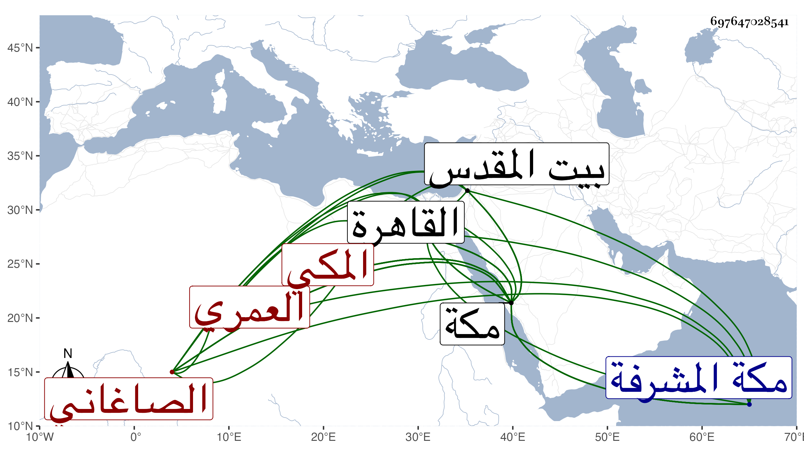

0902Sakhawi.DawLamic.ITO20230111-ara1.EIS1600.697647028541
Biography ID: 697647028541
172
محمد بن أحمد بن محمد بن محمد بن سعيد بن محمد بن محمد بن عمر بن يوسف بن علي بن إسماعيل البهاء أبو البقاء بن الشهاب أبي العباس وأبي الخير بن الضياء أبي عبد الله بن العز العمري الصاغاني الأصل المكي الحنفي الماضي أبوه ويعرف كأبيه بابن الضياء . ولد في ليلة تاسع المحرم سنة تسع وثمانين وسبعمائة بمكة ونشأ بها فأحضر على الجمال الأميوطي وسمع على والده والمحب أحمد بن أبي الفضل وعلي بن أحمد النويريين وابن صديق والشمس بن سكر والزين المراغي وجماعة ، وارتحل غير مرة إلى القاهرة فقرأ بها على الشرف بن الكويك لكثير وعلى الجمال الحنبلي والشمسين الزراتيتي والشامي وشيخنا وآخرين وأجاز له أبو هريرة بن الذهبي وأبو الخير بن العلائي ورسلان الذهبي والبلقيني وابن الملقن والعراقي والهيثمي وابن قوام والتنوخي وابن أبي المجد وطائفة ، وحفظ القرآن ومتونا وتلا لأبي عمرو على الشمس الحلبي ثم جمع سبع على محمد الصعيدي وأخذ الفقه بمكة عن أبيه ، ومما أخذه عنه بحثا بالمسجد الحرام المجمع عودا على بدء بقراءته له على أبيه الضياء عن النظام أبي الفتوح مسعود ويقال بزغش بن البرهان إبراهيم بن الشرف محمد الكرماني إجازة عن مؤلفه المظفر أحمد ابن علي تغلب بن الساعاتي ، وبالقاهرة عن قارئ الهداية ، والنحو بمكة عن الشمس المعيد وبالقاهرة عن العز بن جماعة وعنه وعن والده والنجم السكاكيني الأصول والمعاني والبيان عن الشمس بن الضياء السنامي والشهاب أحمد الغزي الشامي والشمس البرماوي الأصول فعن الأخير جميع ألفيته مع غالب شرحها وعن الذي قبله مختصر ابن الحاجب وعن والده والشمس بن الضياء أصول الدين ، وتقدم وضرب في العلوم بنصيب وافر ، وناب في القضاء بمكة عن أبيه ثم استقل به بعده ثم أضيف إليه نظر الحرم والحسبة ثم انفصل عنهما خاصة ، وصنف المشرع في شرح المجمع في أربع مجلدات والبحر العميق في مناسك حج البيت العتيق كذلك وتنزيه المسجد الحرام عن بدع جهله العوام في مجلد وشرح الوافي في مطول ومختصر ومقدمة الغزنوى في العبادات وسماه الضياء المعنوي في مجلدين والبزدوي ولم يكمل وصل فيه إلى القياس والمتدارك على المدارك في التفسير وصل فيه إلى آخر سورة هود طالعت أماكن منه ونقل أن والده أكمله والشافي في مختصر الكافي لم يكمله ، وله نظم كتبت منه في معجمي أبياتا . وكان إماما علامة متقدما في الفقه والأصلين والعربية ومشاركا في فنون حسن الكتابة والتقييد عظيم الرغبة في المطالعة والانتقاء بحيث بلغني عن أبي الخير بن عبد القوي أنه قال أعرفه أزيد من خمسين سنة وما دخلت إليه قط إلا ووجدته يطالع أو يكتب ، حدث ودرس وأفتى وصنف وأخذ عنه الأئمة كالمحيوي عبد القادر المالكي وعظمه جدا وبالغ البقاعي في الإساءة عليه وعلى أخيه . وقال ابن أبي عذيبة : قاضي مكة المشرفة وعالم تلك البلاد ومفتيها على مذهبه مع الجودة والخير والخبرة بدنياه سافر وطوف البلاد ومع ذلك لم تفته وقفة بعرفة منذ احتلم إلى أن مات ، ودخل بيت المقدس مرتين انتهى . أجاز لي . مات في ذي القعدة سنة أربع وخمسين بمكة ، وهو في عقود المقريزي وأثنى على سيرته وذكر شيئا من تصانيفه رحمه الله وعفا عنه إيانا .
